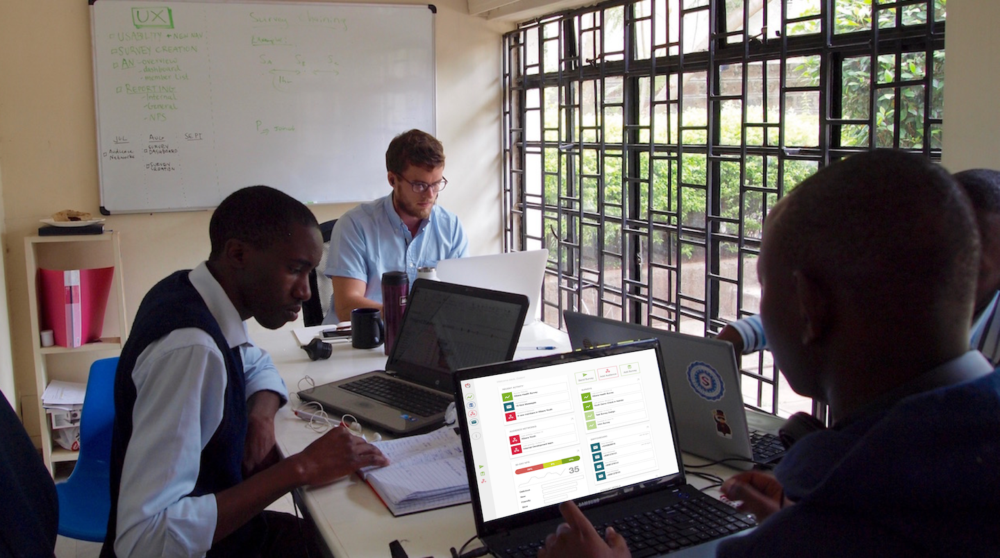
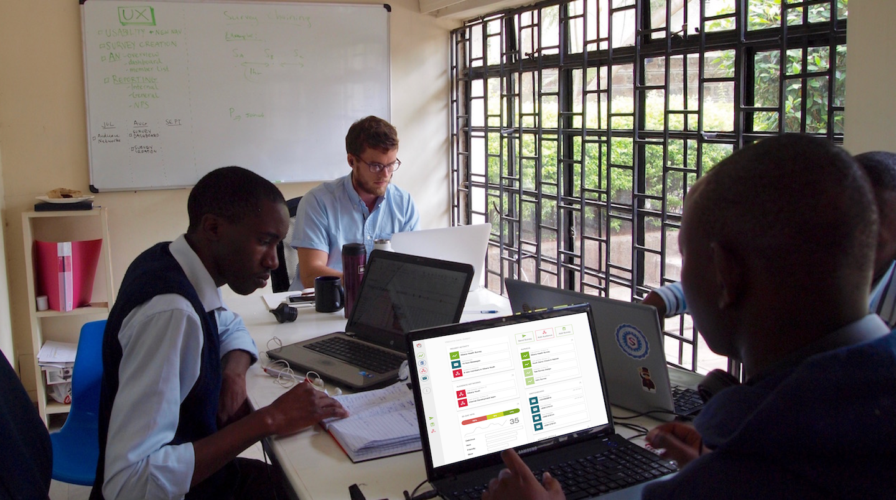

mSurvey is a market research company out of MIT that connects health researchers and businesses with populations in hard-to-reach areas. I continue to lead their design and support implementation after spending the summer with them in Nairobi.
| Where | Nairobi, Kenya |
| When | June 2015 - present |
| Role | UX Engineer |
| Final outputs | New reporting product, survey creation tool, application design |
 



Though tech is booming in Nairobi, it is slow to prioritize design thinking in the development process. It's dismissed as overly subjective and nonessential . This friction translated into a valuable exercise for me, as I not only had to explain the 'what' and 'why' of my work, but also how the process fits into, and influences the wider business strategy.
My design process centered on weekly meetings with power users, interative prototyping in Axure and bootstrap, and frequent sketching.
Sketches of Panel management & reporting
Wireframing
Iterative design of Panel summary card
Designed and implemented responsive visualizations in D3.js
http://vabj8z.axshare.com/home.html
Heuristic evaluation
Competitive analysis
Unstructured interviews
Usability testing
Application map & new user flow
Synthesis document
Sample from heuristic evaluation
Competitive